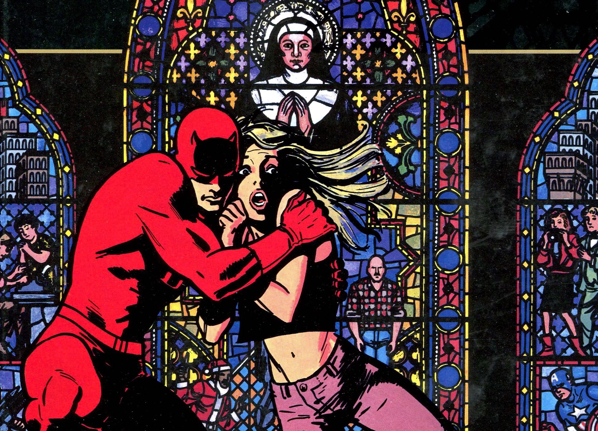
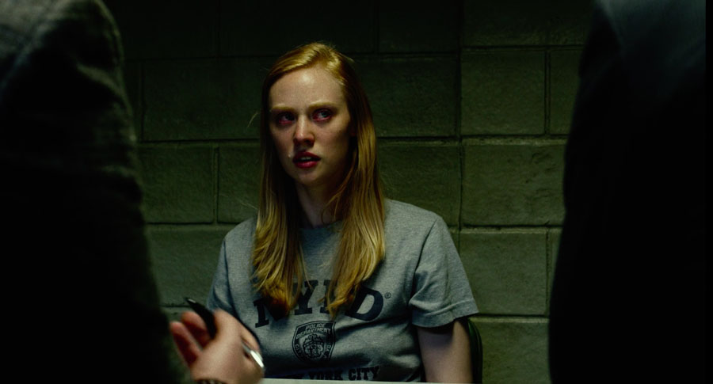
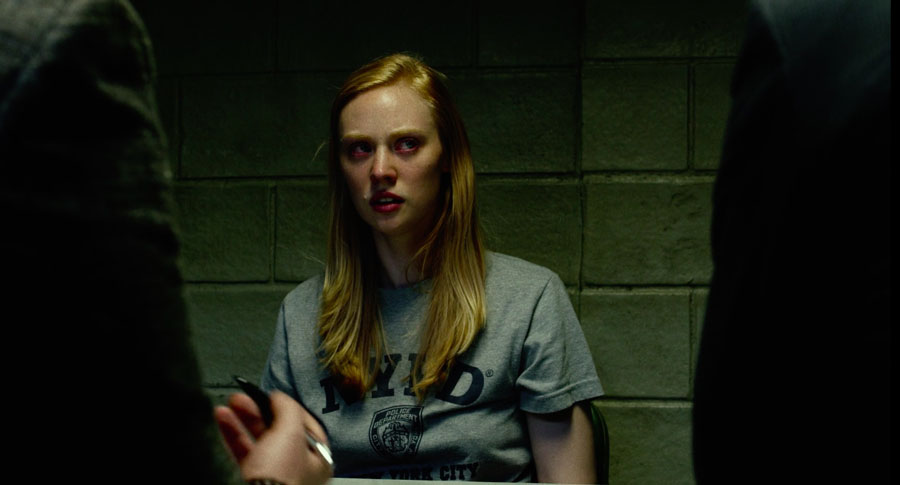
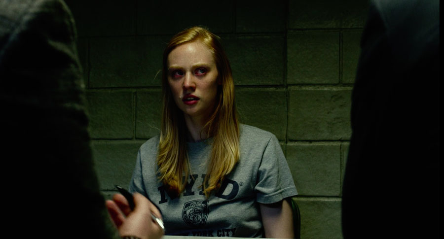
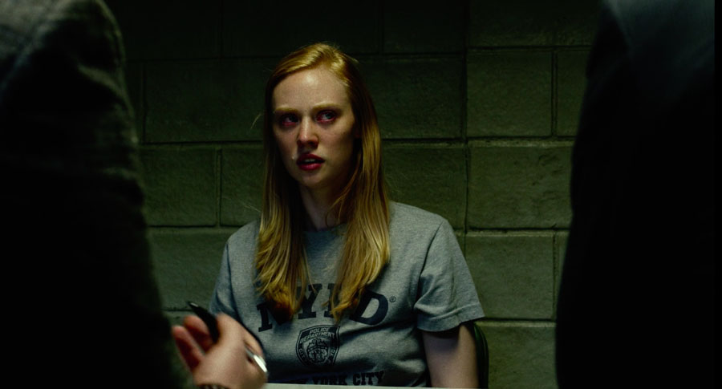

 




Karen Page is the secretary for Nelson and Murdock and, along with Foggy Nelson, Matt Murdock and Ben Urich, was instrumental in the effort to bring Wilson Fisk to justice. While working for Nelson and Murdock, Page came into contact with Frank Castle, who she helped defend in court. When Nelson and Murdock fell apart, Page joined the New York Bulletin with the intention of writing Castle's true story, however during her investigation she was kidnapped by Ray Schoonover and saved by Castle. Later the Hand also kidnapped Page and she was rescued by Daredevil before Murdock revealed to her that he was Daredevil.
Real Name: Karen Page
Height: 5'7"
Weight: 125 lbs
Abilities: None
Powers: None